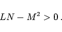
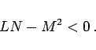
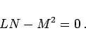

Inhalt Index DeskTop Bronstein

 Geometrie Differentialgeometrie Flächen Krümmung einer Fläche
Geometrie Differentialgeometrie Flächen Krümmung einer Fläche


Sein analytisches Merkmal ist die Bedingung
|  | (3.534a) |
| R1 =R2 | (3.534b) |
|  | (3.534c) |
|  | (3.534d) |
| Beispiel |
|
Alle Punkte eines Ellipsoids sind elliptisch, eines einschaligen Hyperboloids hyperbolisch und eines Zylinders parabolisch. |